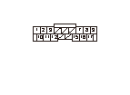
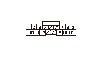
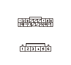
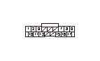

車いす固定装置DTC 23
DTC 23:
L.ホイール チェア テンション モータ回路異常
•
故障診断を始める前に、必ずイグニッション スイッチをOFFにし、SCSカプラの接続を外すこと
•
DTC 24を同時に検知した場合は、
DTC 24のDTC別故障診断の点検も同時に行うこと
再現テスト1
1-1
テールゲートを開け、主電源スイッチをONにする
1-2
L.ウインチベルトを軽く引出し、L.ホイール チェア テンション モータの作動を確認する
◆ ホイール チェア テンション モータが作動し、ベルトを巻取れるか
YES
-
ステップ
2
へ進む
NO
-
一過性故障、現在システムは正常
電源回路（+B EWS MTRライン）の点検
2-1
主電源スイッチをOFFにする
2-2
ホイール チェア ドライブ コントロール ユニット カプラA（17P）の接続を外す
2-3
ホイール チェア ドライブ コントロール ユニット カプラA（17P）のNo.11端子とボディ アース間の電圧を測定する
◆ バッテリ電圧か
YES
-
ステップ
3
へ進む
NO
-
ヒューズ ボックス内のNo.41（7.5A）ヒューズの溶断、またはコードの断線

ホイール チェア ドライブ コントロール ユニットのGND回路（PG4ライン）の断線点検
3-1
ホイール チェア ドライブ コントロール ユニット カプラA（17P）のNo.2端子とボディ アース間の導通を点検する
◆ 導通があるか
YES
-
ステップ
4
へ進む
NO
-
アース不良（G602）、またはコードの断線

ホイール チェア ドライブ コントロール ユニットとホイール チェア テンション モータ間（LBAライン）の断線点検
4-1
L.ホイール チェア ドライブAssy.カプラB（6P）の接続を外す
4-2
ホイール チェア ドライブ コントロール ユニット カプラA（17P）のNo.3、No.12端子とL.ホイール チェア ドライブAssy.カプラB（6P）のNo.1、No.2端子間の導通を点検する
◆ 導通があるか
YES
-
ステップ
5
へ進む
NO
-
コードの断線

ホイール チェア ドライブ コントロール ユニットとホイール チェア テンション モータ間（LBAライン）の短絡点検
5-1
ホイール チェア ドライブ コントロール ユニット カプラA（17P）のNo.3、No.12端子とボディ アース間の導通を点検する
◆ 導通があるか
YES
-
コードの短絡
NO
-
ステップ
6
へ進む
再現テスト2
6-1
ホイール チェア ドライブ コントロール ユニット カプラA（17P）のNo.3端子とバッテリ＋端子を接続する
6-2
ホイール チェア ドライブ コントロール ユニット カプラA（17P）のNo.12端子とバッテリ－端子を接続し、L.ホイール チェア テンション モータでL.ウインチベルトが巻取れるか確認する
バッテリ
ホイール チェア ドライブ コントロール ユニット カプラ（配線色）
＋
A3（空）
－
A12（灰）
◆ ベルトを巻取れるか
YES
-
ホイール チェア ドライブ コントロール ユニットを交換する
NO
-
ステップ
7
へ進む
ホイール チェア テンション モータの単体点検
7-1
L.ホイール チェア テンション モータの点検を行う
◆ 正常か
YES
-
L.ホイール チェア ドライブAssy.を交換する
NO
-
L.ホイール チェア テンション モータを交換する
